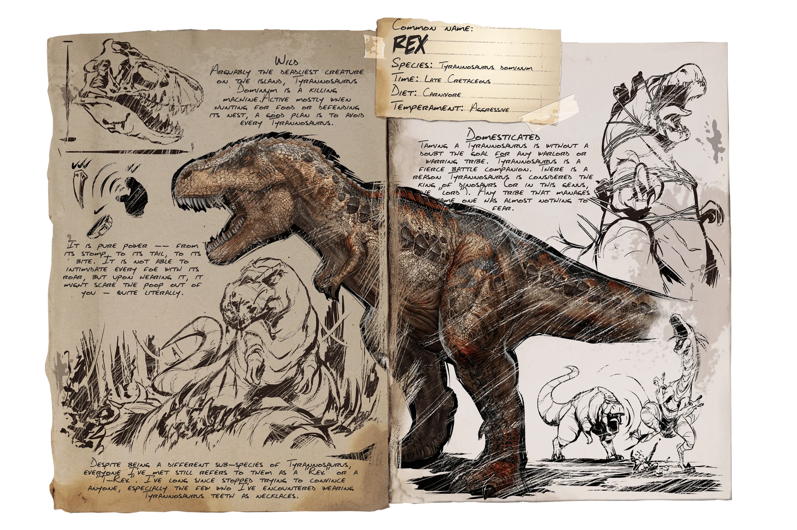

Karkinos
El Karkinos es una de las Criaturas en la Aberración. Es útil para recoger animales salvajes y llevarlos a un corral de domesticación, así como para el uso general de combate o una fuente de Polímero Orgánico.
Estrategia para RAIDEAR
La estrategia básica para usar un Karkinos en solitario para raidear en ARK es aprovechar su capacidad de agarre para lanzar objetos y criaturas a través de muros y defensas enemigas. Usa su fuerza y resistencia para eliminar obstáculos y enemigos mientras avanzas hacia tu objetivo. Recuerda mantenerlo bien alimentado y cuida su salud para asegurarte de que pueda resistir el combate prolongado.
Alosaurio
El Alosaurio es un depredador formidable que vive en manadas y es conocido por su ferocidad en la caza. Es más grande que el Carnotaurus pero más pequeño que el Tyrannosaurus Rex. Su característica más distintiva es la cresta ósea que corre a lo largo de su cabeza y cuello. Los Allosaurios son especialmente peligrosos cuando cazan en grupo, ya que cada miembro puede infligir daño adicional cuando están cerca de otros Allosaurios en la manada debido a su habilidad "Rugido de Alfa". Son rápidos y ágiles, lo que los convierte en depredadores temibles tanto en tierra como en agua. Además, pueden ser domados y montados por los supervivientes, lo que los convierte en excelentes compañeros de caza y defensa.
Estrategia para RAIDEAR
La estrategia para raidear con Allosaurios en ARK generalmente implica formar una manada de ellos y usar su habilidad "Rugido de Alfa" para aumentar su daño. Asegúrate de tener un buen número de Allosaurios bien alimentados y entrenados para maximizar su efectividad. Luego, coordina su ataque para emboscar a los defensores y causar el mayor daño posible a las estructuras y criaturas enemigas. Ten en cuenta la resistencia y la salud de tus Allosaurios para mantenerlos vivos durante el asalto y recuerda llevar suministros y refuerzos si es necesario.
Rex
El Tiranosaurio rex, comúnmente conocido como el T-Rex, es una de las criaturas más icónicas y temibles en ARK: Survival Evolved. Es uno de los depredadores más grandes y poderosos del juego, con una enorme mandíbula llena de dientes afilados y una fuerza formidable. El T-Rex es extremadamente fuerte en combate, capaz de infligir una gran cantidad de daño a otras criaturas y estructuras. Además de su fuerza bruta, también tiene una velocidad sorprendente para su tamaño, lo que lo convierte en un cazador formidable en tierra. En ARK, el T-Rex puede ser domado y montado por los jugadores, lo que los convierte en poderosos aliados en la caza, la defensa y el ataque durante el raideo.
Estrategia para RAIDEAR
La estrategia ideal para raidear con un Tyrannosaurus rex en ARK implica entrenar y equipar a un rex con alta salud y daño, identificar los puntos débiles en las defensas enemigas antes del ataque y considerar llevar criaturas de apoyo para distracción o eliminación de defensas. Dirige al rex hacia el objetivo principal, priorizando las estructuras defensivas y criaturas enemigas más peligrosas, y mantén un equilibrio entre atacar y proteger la salud del rex durante el asalto.

Wyvern
El Wyvern es una criatura majestuosa y poderosa que se asemeja a un dragón. Hay varios tipos de Wyverns en el juego, cada uno con diferentes atributos y habilidades. Son criaturas voladoras que habitan en el peligroso mundo del mapa Scorched Earth y en otros biomas específicos. Los Wyverns son conocidos por su aliento de fuego que puede infligir graves daños a las criaturas y estructuras enemigas, así como por su habilidad para volar rápidamente a través del aire. Pueden ser domesticados y montados por los jugadores, lo que los convierte en excelentes aliados tanto en combate como en transporte aéreo. Sin embargo, domesticar un Wyvern requiere un enfoque cuidadoso y táctico debido a su agresividad y poder.
Estrategia para RAIDEAR
Para raidear con un Wyvern en ARK, domestica uno de alto nivel y potencia sus estadísticas de salud y daño. Realiza reconocimiento del área objetivo para identificar las defensas enemigas y encuentra puntos de entrada seguros. Durante el asalto, aprovecha la capacidad de vuelo del Wyvern para atacar desde el aire, usando su aliento de fuego para causar estragos en las estructuras y criaturas enemigas. Mantén una estrategia ágil y evita ser derribado por las defensas enemigas mientras infliges daño desde arriba.
Quetzal
El Quetzal es una criatura gigantesca y voladora que se asemeja a un pájaro prehistórico. Es conocido por su enorme tamaño y su capacidad de transportar grandes cantidades de carga, lo que lo convierte en uno de los mejores transportadores del juego. Además de su capacidad de carga, el Quetzal es relativamente rápido en vuelo y tiene una gran cantidad de salud, lo que lo hace resistente a los ataques enemigos. Estas características lo convierten en una opción popular para transportar recursos, dinos y equipos durante el juego, así como en una plataforma de combate aéreo eficaz cuando está equipado con torretas o armas montadas. El Quetzal puede ser domado y montado por los jugadores, proporcionando una movilidad aérea excepcional y oportunidades de combate estratégico en el mundo de ARK.
Estrategia para RAIDEAR
Una estrategia efectiva para raidear con un Quetzal en ARK implica equiparlo con torretas montadas o armas de largo alcance y volar cerca del objetivo enemigo mientras un compañero controla las armas. Utiliza la velocidad y la agilidad del Quetzal para mantener una posición evasiva mientras bombardeas las defensas enemigas y las criaturas con fuego desde el aire. Además, puedes utilizar su capacidad de carga para transportar suministros y equipos adicionales, así como para evacuar rápidamente si la situación se vuelve peligrosa. Coordina tus ataques con otros miembros del equipo y mantén la comunicación constante para asegurar un asalto efectivo.